ТЕМА 2. Підсилювачі напруги
1. Класифікація підсилювачів, основні визначення.
1.1. Класифікація підсилювачів.
1.2. Параметри і характеристики підсилювачів.
2. Підсилювач напруги на біполярному транзисторі та режими його роботи.
2.1. Підсилювальний каскад на схемі із загальним емітером.
2.2. Класи роботи підсилювального каскаду на транзисторі.
2.3. Ключовий режим роботи транзистора.
3. Підсилювач напруги на польовому транзисторі та його прохідні характеристики.
3.1. Характеристики польового транзистора.
3.2. Підсилюючий каскад на польовому транзисторі.
4. Зворотні зв'язки в підсилювачах.
1. Класифікація підсилювачів, основні визначення
Підсилювачем називають пристрій, який призначений для підвищення потужності електричних коливань вхідного сигналу. Підвищення потужності вхідного сигналу досягається за рахунок енергії джерела живлення. Малопотужний вхідний сигнал лише керує передачею енергії джерела живлення в корисне навантаження. Електричні коливання підсилюються за допомогою підсилювальних елементів (ПЕ). Підсилювальні елементи отримують електричну енергію від джерела живлення і перетворюють її в енергію підсилювальних сигналів, тобто вони мають керуючі властивості.
Керуюче джерело електричної енергії, від якого підсилюванні сигнали надходять на підсилювач, називається джерелом сигналу (ДС). Пристрій, який споживає підсилювальні сигнали, називається навантаженням (Н).
Джерело енергії, яке перетворюється підсилювачем в енергію підсилювальних сигналів, називається джерелом живлення (ДЖ) підсилювача.
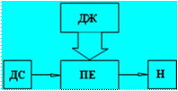
Рис.1. Структурна схема підсилювача
1.1. Класифікація підсилювачів
Існують класифікації підсилювачів за різними ознаками, зокрема:
– за характером сигналів, що підсилюються (підсилювачі гармонічних сигналів, підсилювачі імпульсних сигналів);
– за смугою сигналів, що підсилюються (підсилювачі змінного струму,
підсилювачі високої частоти, підсилювачі проміжної частоти, підсилювачі низької частоти, широкосмугові підсилювачі, вибіркові або селективні підсилювачі, підсилювачі постійного струму);
– за призначенням підсилювачів (магнітофонні, телевізійні, радіолокаційні, вимірювальні, трансляційні, дальнього зв’язку і т.д.);
– за видом підсилювальних елементів, що застосовуються (транзисторні, лампові, магнітні, діодні, молекулярні, електромашинні).
Підсилювачі на транзисторах і електронних лампах називають електронними оскільки принцип їх роботи оснований на електронних процесах, які відбуваються в напівпровідниках і вакуумі.
Лінійні електронні підсилювачі - це підсилювачі, які призначені для підсилення електричних сигналів без зміни їх форми.
Основні дані підсилювача:
Вихідні дані підсилювача:
– вихідна потужність - Рн ;
– вихідна напруга - Uн ;
– вихідний струм - Iн ;
– вихідний опір підсилювача - Zвих;
– опір навантаження - Zн .
Вхідні дані підсилювача:
– вхідна напруга - Uвх ;
– вхідний струм - Iвх ;
– вхідна потужність - Pвх ;
– вхідний опір підсилювача - Zвх .
1.2. Параметри і характеристики підсилювачів
Коефіцієнт підсилення - це один з основних параметрів підсилювача, він показує в скільки разів приріст підсиленої величини на виході підсилювача перевищує приріст відповідної величини на вході підсилювача. Коефіцієнт підсилення за напругою - це відношення встановленого значення напруги сигналу на виході підсилювача до напруги сигналу на його вході.

В підсилювальній техніці використовуються також поняття коефіцієнт підсилення за струмом
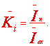
і коефіцієнт підсилення за потужністю
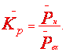
Коефіцієнти є комплексними величинами, так як вихідні величин напруг і струмів зсунуті за фазою відносно вхідних складових за рахунок реактивних складових опорів в колах підсилювача і навантаження.Часто модуль коефіцієнта підсилення виражають в логарифмічних одиницях (децибелах)
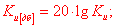
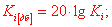
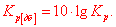
Для багатокаскадного підсилювача сумарний коефіцієнт підсилення в залежності від того в яких одиницях він нормується визначається такими виразами
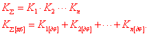
де n - кількість каскадів підсилювача.
При підсиленні сигналів підсилювач змінює їх форму. Зміна форми складного гармонічного сигналу на виході підсилювача пов’язана з тим, що:
– гармонічні складові складного вхідного сигналу підсилюються неоднаково, тобто це означає, що коефіцієнт підсилення підсилювача неоднаковий на різних частотах;
– гармонічні складові складного вхідного сигналу при підсиленні мають різне значення зсуву фаз, що приводить до зміни взаємного розташування гармонічних складових у вихідному сигналі.
Спотворення форми вихідного сигналу, яке викликане неоднаковим підсиленням різних частот, називають частотними спотвореннями, а спотворення форми вихідного сигналу, які викликані фазовими зсувами, які вносяться підсилювачем, називають фазовими спотвореннями.
Частотні спотворення оцінюють за його частотною характеристикою, яка є залежністю модуля коефіцієнта підсилення від частоти. Частотну характеристику будують в прямокутній системі координат на вертикальній осі відкладають значення Кu в лінійному масштабі в відносних або логарифмічних одиницях, а на горизонтальній осі – частоту в герцах в лінійному або логарифмічному масштабі.
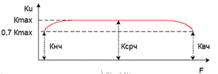
Рис.2. Частотна характеристика підсилювача
Діапазоном робочих частот підсилювача гармонічних сигналів називають смугу частот від нижньої до верхньої робочої частоти в межах якої модуль коефіцієнта підсилення, а іноді і фаза не повинні виходити за межі заданих допусків.
Фазові спотворення, які вносяться підсилювачем, оцінюються за його фазовою характеристикою, яка є залежністю кута зсуву між вихідною і вхідною напругами підсилювача від частоти. Фазову характеристику будують окремо для області нижніх і окремо для області верхніх частот.
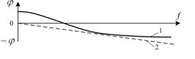
Рис.3. Фазова характеристика підсилювача
Умовою неспотвореного підсилення сигналу є пропорційність фазового зсуву, який вноситься підсилювачем, частоті підсиленого сигналу, тому ідеальною фазовою характеристикою підсилювача є пряма 2, яка проходить через початок координат.
Амплітудна характеристика підсилювача – це залежність амплітуди вихідної напруги підсилювача від амплітуди його вхідної напруги на деякій сталій частоті.
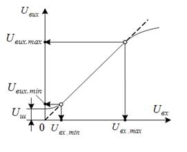
Рис. 4. Амплітудна характеристика підсилювача
2. Підсилювач напруги на біполярному транзисторі та режими його роботи
2. 1. Підсилювальний каскад на схемі із загальним емітером
У різних пристроях промислової електроніки найчастіше застосовують підсилювальний каскад, виконаний по схемі із загальним емітером. Схема такого каскаду з використанням транзистора типу n-p-n показана на рис.5. При такому включенні транзистора емітер є загальним електродом між входом і виходом підсилювача. Для нормальної роботи n-р-n транзистора потрібно подати позитивну напругу на колектор і базу. Якщо в підсилювачі використовується транзистор типу n-p-n полярність джерела живлення Еk змінюють на протилежну. Сигнал, що підсилюється, подається між базою і емітером транзистора через розділовий конденсатор Ср1, що запобігає протіканню постійної складової струму через джерело вхідного сигналу під дією постійного базового струму зсуву.

Рис. 5. Схема підсилювального каскаду з загальним емітером
У колекторну гілку транзистора включений опір Rk, на якому виникають постійні і зміні складові падіння напруги. Зміна потенціалу колектора підводиться до опору навантаження Rн через конденсатор Ср2. Розділовий конденсатор Ср2 служить для виділення на виході підсилювача змінної складової посиленого сигналу.
Ємність конденсаторів Ср1 і Ср2 вибирають так, щоб на найнижчій частоті, що підсилюється, можна було нехтувати їх опорами в порівнянні з вхідним опором і опором навантаження відповідно.
Режим роботи транзистора в підсилювачі вибирається так, щоб під час поступлення вхідних сигналів пропорційно змінювалися вихідні струми і напруги транзистора.
Для цього до джерела підключений опір Rб, що визначає значення постійного струму вхідного кола Iоб.
Розглянемо процес посилення синусоїдального сигналу, користуючись вхідною і вихідною характеристиками транзистора (рис.6).
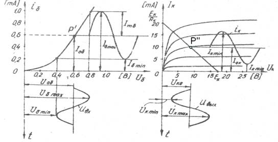
Рис. 6. Процес посилення синусоїдального сигналу схемою з ЗЕ
Очевидно, що напруга вхідного сигналу Uвх синфазно змінює струм бази. Зміна базового струму викликає пропорційні зміни струму колектора і напруги на колекторі.
Для знаходження значень цих величин скористаємося рівнянням електричного стану колекторного кола, складеним по другому закону Кирхгофа: Ек = Uk +Ik Rk , звідки напруга на колекторі Uk = Ек - Ik Rk.
Цьому рівнянню відповідає пряма, що називається лінією навантаження, яка будується на сімействі статичних вихідних характеристик транзистора. Лінію навантаження по постійному струму можна побудувати по двох точкам, які легко знаходяться при розгляді граничних режимів роботи транзистора. При Ik = 0, що відповідає Uk = Ек, визначається точка на осі абсцис, а при Ik = Ек / Rk , що відповідає Uk =0, знаходиться інша точка на осі ординат. Всі можливі значення струмів і напруг на транзисторі лежить в точках перетину кривих сімейств статичних вихідних характеристик з лінією навантаження по постійному струму. Вони не повинні виходити за максимально допустимі значення струму і напруги колектора і повинні обмежуватися кривою Рк max .
Оскільки при збільшенні струму бази падіння напруги на опорі Rk збільшиться, потенціал колектора зменшиться. Це означає, що посилена синусоїдна вихідна напруга опиняється в протифазі з вхідною напругою. Тому говорять, що підсилювач при ЗЕ є інвертуючим. При посиленні імпульсного сигналу його полярність змінюється на протилежну.
Точка P'' перетину прямої навантаження із вихідною статичною характеристикою транзистора, яка залежить від початкового вхідного струму Iоб, називається початковою робочою точкою. При відсутність вхідного сигналу робочу точку називають точкою спокою, яка визначає струм Iок і напругу Uок спокою вихідного кола. Початковий вхідний струм або струм зсуву бази визначається опором Rб, значення якого можна розрахувати по формулі Rб = (Ек - Uоб)/ Iоб ≈ Ek / Iоб ,де Uоб , Iоб - відповідно початкова вхідна напруга і струм спокою.
2.2. Класи роботи підсилювального каскаду на транзисторі.
Ступінь нелінійних спотворень підсилюваних сигналів і к.к.д. підсилювального каскаду визначається вибором його робочого режиму (класу) роботи. В залежності від того, протягом якого часу, за час періоду вхідного сигналу, протікає струм у колекторному колі транзистора, розрізняють чотири основні режими (класи) роботи транзистора: А, АВ, В, С.
Для оцінки режиму роботи транзистора вводять параметр, який називають кутом відсічки. Кутом відсічки називають половину тієї частини періоду сигналу протягом якої протікає струм через транзистор. Кут відсічки позначають літерою θ і виражають у кутових одиницях.

Рис. 7. Режими роботи транзистора: а) режим В; б) режим АВ; в) режим С
В режимі класу А робоча точка не виходить за границі лінійної ділянки динамічної характеристики, а точка спокою переважно знаходиться на середині навантажувальної прямої для постійного струму. Це забезпечує мінімальні нелінійні спотворення підсилювача. Напруга зміщення в цьому режимі за абсолютним значенням завжди більша амплітудного значення вхідної напруги, а вхідний струм спокою завжди більший амплітудного значення змінної складової вхідного струму.
Отже в класі А струм у вихідному колі транзистора протікає протягом всього періоду напруги підсилюваного сигналу. Кут відсічки в класі А складає θ=180о =π. Цей клас роботи застосовується переважно в каскадах попереднього підсилення, а також в каскадах потужного підсилення незначної потужності. Основна перевага режиму А – мале значення ступеня нелінійних спотворень підсилюваних сигналів, а основний недолік – низьке значення к.к.д. каскаду, яке переважно не перевищує (20-30) %.
В транзисторних підсилювальних каскадах транзистор відкритий тільки протягом половини періоду вхідного сигналу (рис.7,а), тому в класі В кут відсічки складає, а робоча точка в режимі спокою вибирається при малих значеннях колекторного струму близьких до Ік0.
Перевага класу В – мале споживання енергії і к.к.д. досягає (60-70)%.
Недолік – великий рівень нелінійних спотворень і переважно застосовується в двотактних схемах підсилення потужності.
Клас АВ (рис. 7, б) – займає проміжне положення між класами А і В. Кут відсічки в класі АВ знаходиться в межах. Цей клас роботи більш економічний ніж клас А, к.к.д. досягає (50-60)% і має менші нелінійні спотворення ніж в класі В. Застосовується в двотактних підсилювачах потужності, коли необхідно поєднати низький рівень нелінійних спотворень з високим значенням к.к.д.
В режимі С (рис. 7, в) струм спокою вхідного кола транзистора дорівнює нулю. В цьому режимі струм у вихідному колі підсилювального елемента протікає протягом часу меншого за половину періоду вхідного сигналу. Кут відсічки в класі С знаходиться в межах. В класі С точка спокою знаходиться в режимі відсічки.
Цей режим більш економічний ніж в класі В, к.к.д. досягає 85% і застосовується в потужних резонансних підсилювачах потужності де навантаженням є резонансний – контур, який налагоджений на частоту вхідного сигналу.
2. 3. Ключовий режим роботи транзистора
В залежності від стану p-n- переходу розрізняють 3 режими роботи транзисторів (рис. 8):
I – режим відсічки – це режим, при якому обидва його переходи закриті (і емітерний і колекторний). Струм в базі дорівнює 0. Струм колектора буде рівний зворотному струмові;
II – режим насичення – це режим, коли обидва переходи – і емітерний, і колекторний відкриті, в транзисторі відбувається вільний перехід носіїв зарядів, струм бази буде максимальним, струм колектора буде рівний струму колектора насичення;
III – лінійний режим – це режим, при якому емітерний перехід відкритий, а колекторний закритий.
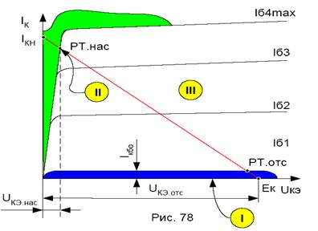
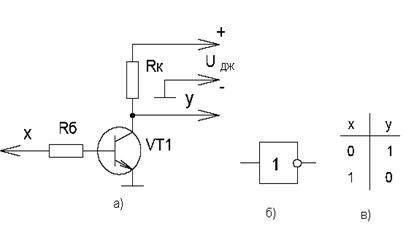
Рис. 8. Ключові режими роботи транзисторів
3. Підсилювач напруги на польовому транзисторі та його прохідні характеристики
3.1. Характеристики польового транзистора
Основними характеристиками польового транзистора є:
– прохідна (стоко-затворна) характеристика (рис.9);
– вихідна характеристика (рис.10).
Вхідні характеристики польового транзистора
Прохідна характеристика польового транзистора – це залежність струму стоку від напруги на затворі за умови незмінності напруги витік – сток, тобто IС = f (UЗВ),
UВС = const.
Вихідна характеристика польового транзистора – це залежність струму стоку від напруги на стоці відносно витоку за умови незмінності напруги на затворі, тобто
IС = f (UВС), UЗВ=const.
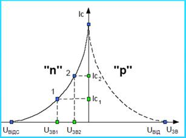
Рис. 9. Стоково - затворна характеристика польового транзистора

Рис. 10. Вихідні характеристики польового транзистора
3. 2. Підсилюючий каскад на польовому транзисторі
Підсилювальні каскади на польових транзисторах мають високе значення вхідного опору, малий рівень шумів при високоомному джерелі вхідного сигналу і тому широко застосовуються в якості вхідних каскадів різноманітних вхідних пристроїв підсилювачів (рис.11).
Напруга зміщення на затворі транзистора забезпечується за рахунок струму спокою iC0, який протікає через резистор Rв. Ця напруга через резистор прикладається до затвору із закриваючою (від’ємною) полярністю. Змінюючи значення резистора можна змінювати напругу на затворі і значення струму в режимі спокою (рис.12).
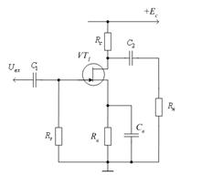
Рис. 11. Схема підсилювального каскаду на польовому транзисторі
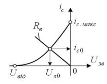
Рис. 12. Вибір робочої точки на стоково-затворній характеристиці транзистора
4. Зворотні зв'язки в підсилювачах
Крім кола прямої передачі енергії сигналу підсилювальний каскад може мати електричні кола по яких частина енергії корисного сигналу передається з виходу каскаду на його вхід або на вхід одного з попередніх каскадів. Це явище називається зворотним зв’язком. Зворотний зв'язок може бути загальним (рис.13), який охоплює весь підсилювач і місцевим (рис.14), який охоплює окремі каскади підсилювача. Замкнутий контур, який охоплює основне коло і коло зворотного зв’язку, яке охоплює підсилювач, називається петлею зворотного зв’язку.
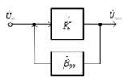
Рис. 13. Загальний зворотний зв'язок в підсилювач
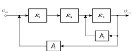
Рис. 14. Загальний та місцевий зворотні зв'язки в підсилювачі
В залежності від того, якій величині пропорційна напруга зворотного зв’язку, розрізняють зворотний зв'язок за напругою і за струмом. Якщо напруга зворотного зв’язку пропорційна вихідній напрузі на навантаженні, то такий зворотний зв'язок називається зворотним зв’язком за напругою (рис.15,а).
Якщо напруга зворотного зв’язку пропорційна струму в навантаженні, то це буде зворотний зв'язок за струмом (рис.15, б). Якщо напруга зворотного зв’язку пропорційна як напрузі, так і струму в навантаженні, то такий зворотний зв'язок називається комбінованим (рис.15, в.).
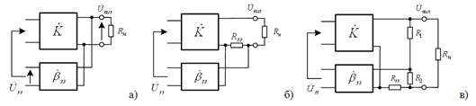
Рис. 15. Види зворотного зв'язку
За способом введення сигналу у вхідне коло підсилювача розрізняють паралельний і послідовний зв'язок. При послідовному зворотному зв’язку (рис.16) напруга зворотного зв’язку вводиться у вхідне коло послідовно з вхідною напругою і напруга сигналу на вході ідсилювача буде складати

Якщо напруга зворотного зв’язку подається паралельно до вхідної напруги підсилювача (рис.17), то такий зворотний зв'язок називають паралельним зворотним зв’язком. У цьому випадку струм на вході підсилювача буде складати
У підсилювачах із змішаним зворотним зв’язком у вхідному колі підсилювача послідовно вмикаються: сигнал зворотного зв’язку пропорційний вихідній напрузі і паралельно сигнал зворотного зв’язку пропорційний вихідному струму.
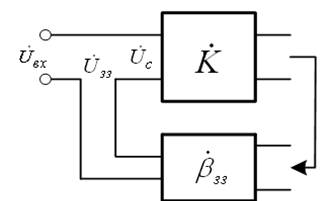
Рис. 16. Послідовний зворотній зв’язок
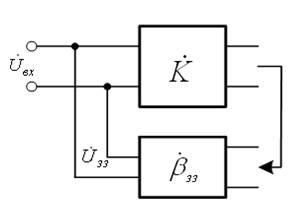
Рис. 17. Паралельний зворотній зв’язок
Основними характеристиками зворотного зв’язку є коефіцієнт зворотного зв’язку.
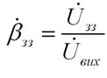 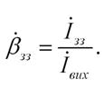